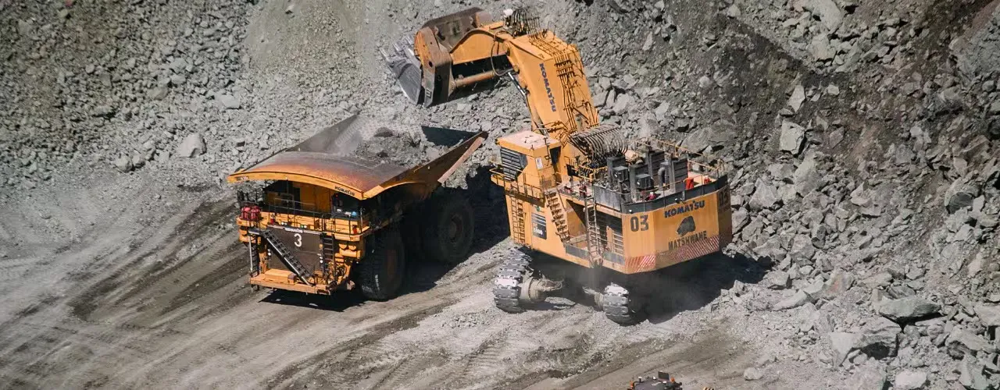

About the Client
A state government’s mining department tasked with regulating and monitoring mineral exploration, extraction, and transportation. The client needed a transparent, technology-driven system to prevent revenue leakage, curb illegal mining, and streamline operations across all mineral stakeholders.
The Challenge
The mining administration relied on legacy systems with limited visibility into mineral movements, approvals, and compliance tracking. Manual monitoring processes created loopholes and failed to support real-time decision-making or enforce regulatory compliance.
Key challenges included:
- Fragmented systems across lessees, traders, and transporters
- Absence of centralized tracking for mineral dispatches
- Lack of stakeholder transparency and real-time analytics
- Revenue leakage and risk of illegal mining activities
- Need for modern, scalable, cloud-based architecture
The Solution
We developed and implemented Khanij 2.0, a cloud-based, enterprise-grade platform combining vehicle tracking, stakeholder management, and centralized command control infrastructure.
Key features included:
- Single-window system for mining stakeholders: lessees, traders, licensees, and transporters
- Vehicle Tracking System (VTS) integration for real-time monitoring of mineral movement
- Cloud-based architecture for secure, scalable data access
- Web and mobile interfaces for field and office users
- Integrated Command and Control Centre (ICCC) with real-time dashboards
- Geo-tagged incident tracking and spatial visualization of mining activity
- Training, capacity building, and full lifecycle operations and maintenance support
The Impact
Khanij 2.0 transformed mineral governance and improved operational integrity:
Key Project Highlights
- End-to-end enterprise solution tailored for mineral governance
- Integrated VTS, ICCC, and stakeholder platform on a unified portal
- Real-time visibility and automated compliance reporting
- Cloud-hosted infrastructure minimizing on-premise dependencies
- Improved transparency in mineral dispatch and revenue management